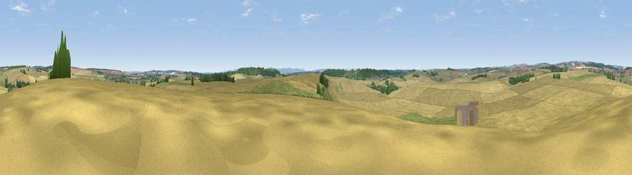

Viewpoint near Winterborne Kingston
#33112 in England · top 68% of its area beats it · near Winterborne Kingston · path 155 mWhere it is
The exact computed spot (SY 84425 97175). Click the marker for map links.
Public access: the nearest public right of way is about 155 m away — the final stretch may cross private land. Computed from Natural England's CRoW access layer and OpenStreetMap rights of way — not the legal definitive map. Always verify locally.
The view, rendered

A 360° render of this exact spot computed from the terrain model, tree cover and land cover — summer colours, afternoon light, calibrated against photographs of famous viewpoints. Real trees, hedges and buildings will differ in detail.
The panorama
Grey silhouette: terrain skyline in each direction (720 bearings, Earth curvature and refraction included). Dashed green: skyline with trees (+15 m) and buildings (+8 m) as obstacles. Blue strip: how far the ground is visible on each bearing.
Where the view opens
Wedge length = distance to the farthest visible ground on that bearing (vegetation-aware). Rings at 10, 25 and 50 km.
What fills the view
78% cropland · 15% grassland · 5% woodland · 1% built-up
Angular shares of the visible panorama (visual magnitude), not map area. Landscape diversity 0.30 (0–1 Shannon).
Key numbers
More beautiful places nearby
The staircase of upgrades: each row has a higher view potential than everything closer. Driving times are estimates from straight-line distance, calibrated against real road routing — check an actual route before setting out.
| Place | Direction | Drive | Score |
|---|---|---|---|
| Woodbury Hill | SSE · 3 km | ~6 min | 52.8 |
| Viewpoint near Bere Regis | SSE · 3 km | ~7 min | 56.1 |
| Viewpoint near Milton Abbas | NNW · 7 km | ~15 min | 64.2 |
| Viewpoint near Melcombe Bingham | WNW · 11 km | ~21 min | 66.8 |
| Viewpoint near Ibberton | NNW · 11 km | ~21 min | 71.3 |
| Viewpoint near Woolland | NW · 11 km | ~21 min | 74.5 |
| Whiteway Hill | SSE · 17 km | ~29 min | 85.0 |
| Rings Hill | S · 17 km | ~29 min | 87.5 |
50.77394, -2.22225 · source: screening · position refined by local search. Computed location — check access rights before visiting.